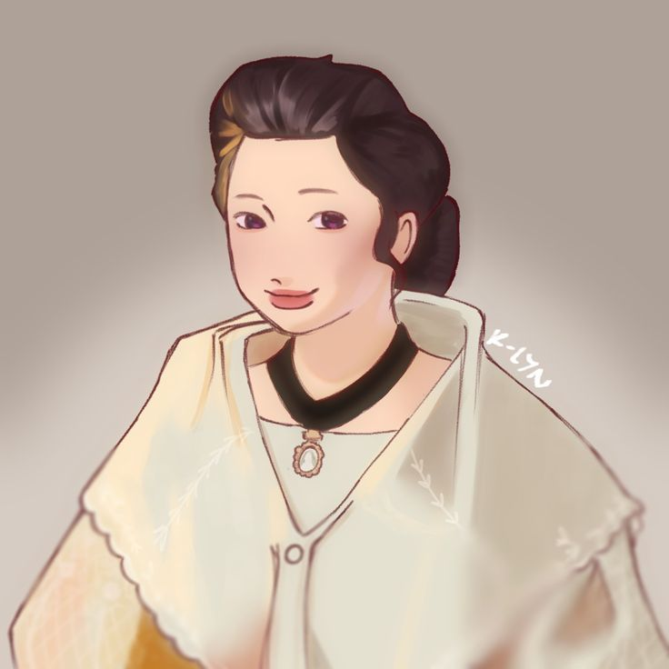

| CHARACTERS IN NOLI ME TANGERE |
 |
Juan Crisostomo Ibarra y Magsalin |
- He was raised by his father, Don Rafael, in San Diego
- He studied for 7 seven years in Europe, specifically Germany, and his father and Captain Tiago set up with Maria Clara while away
- Well-respected, intelligent, and idealistic
|
|  |
Maria Clara |
- Her full name is Maria Clara de los Santos
- She is a woman of class who is believed to be Captain Tiago's daughter and Father Damaso's goddaughter
- She was raised with love and affection and desired to become a nun
|
 |
Father Damaso |
- Former town curate of San Diego
- A Franciscan priest who is known to be rather violent towards those who don't follow his orders
- Despite being Don Rafael's friend, he was one of the main causes for his death
|
Back to Top